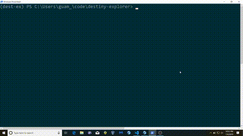
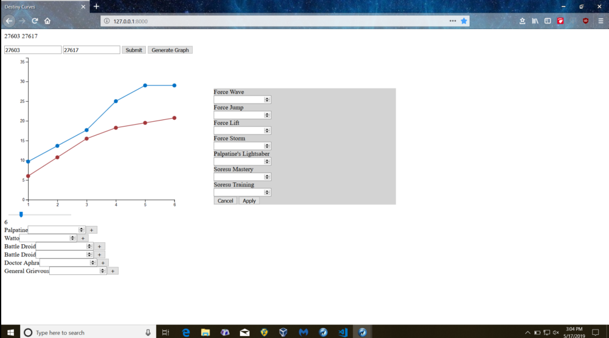

This is a website that implements the Fantasy Flight Games Keyforge API to show statistics,
deck relationships, and other useful information on decks that have been registered in their database.
A Postgres database was used to store information used in calculations and searches.
Technologies:
Technologies:
Python 3 Django 2.2 Javascript PostgreSQL11 HTML5 CSS3
D3.js

This is a simple ray tracer that uses a geometric solution to test for intersections.
The shading method uses the facing ratio to emulate a light source with origin at the camera location.
Technologies:
Technologies:
Python 3 PIL

This is a CLI for use with a predefined PAO memory system. It allows the user to
encode numbers, train by decoding numbers, or edit the associations for each number.
Technologies:
Technologies:
Python 3 openpyxl

This is a CLI for quick lookup of cards for the Star Wars Destiny card game.
Cards can be listed by filter or searched individually. Card info and image is displayed for individual
cards. For characters, pairings can be generated based on point values.
Technologies:
Technologies:
Python 3 PostgreSQL11 psycopg2 PIL colorama

Work in progress for a Star Wars Destiny tool. The page generates rough damage and
resource curves for decks built on swdestinydb.com. Options allow for the addition of upgrades/supports
per turn and what order characters should be targeted in.
Technologies:
Technologies:
Python 3 Django 2.2 Javascript CSS3 HTML5 D3.js